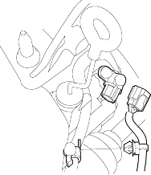
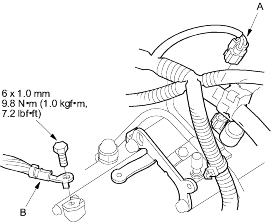
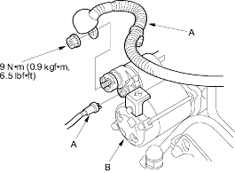

- Connect the countershaft speed sensor connector and install the harness clamp on the clamp bracket.

- Connect the torque converter clutch solenoid valve connector (A), then install the harness clamp on the transmission hanger.

- Install the transmission ground cable (B).
- Connect the starter cables (A) to the starter (B) and install the harness clamp on the clamp bracket. Make sure the crimped side of the starter cable ring terminal is facing out.

- Install the battery base, then install the harness clamp on the battery base.
- Install the resonator and intake air duct.
- Refill the transmission with ATF (see page 14-122).
- Install the battery tray and battery, then secure the battery with its hold-down bracket.
- Connect the battery positive terminal, then connect the negative terminal.
- Set the parking brake. Start the engine and shift the transmission through all gears three times.
- Check the shift lever operation, A/T gear position indicator operation and shift cable adjustment.
- Check and adjust the front wheel alignment (see page 18-4).
- Start the engine and let it reach normal operating temperature (the radiator fan comes on) with the transmission in P.gif or N.gif position, then turn if off and check the ATF level (see page 14-121).
- Perform a road test (see page 14-108).
- Enter the radio station presets and set the clock.